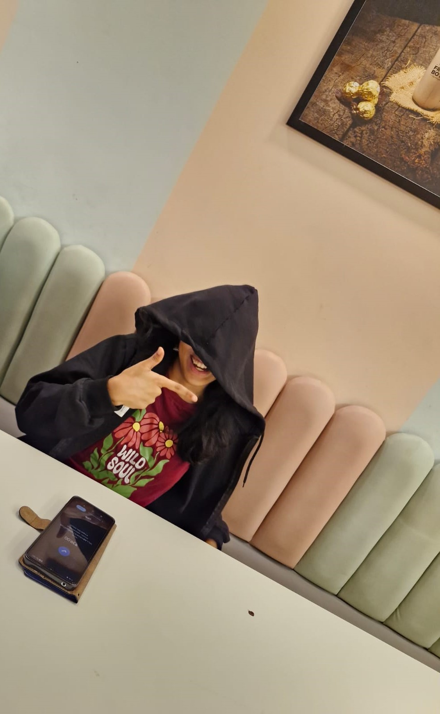
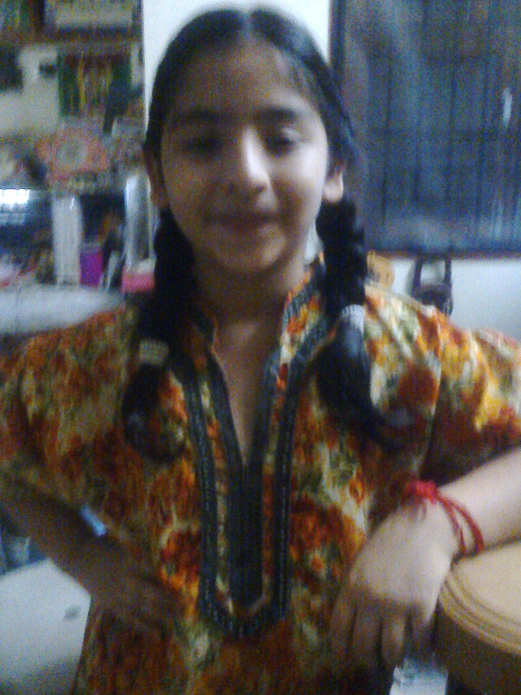
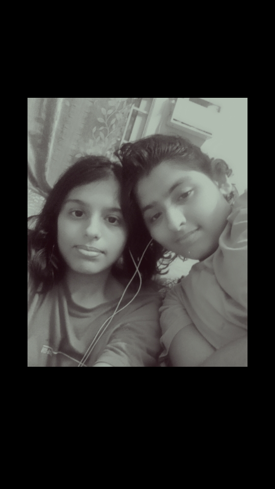
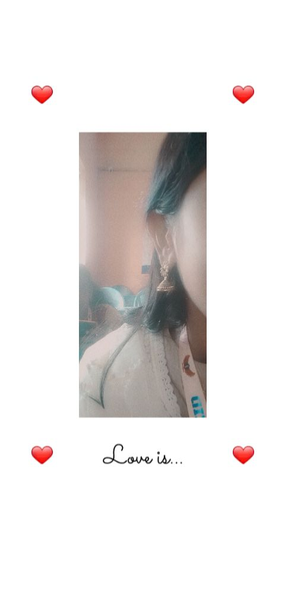
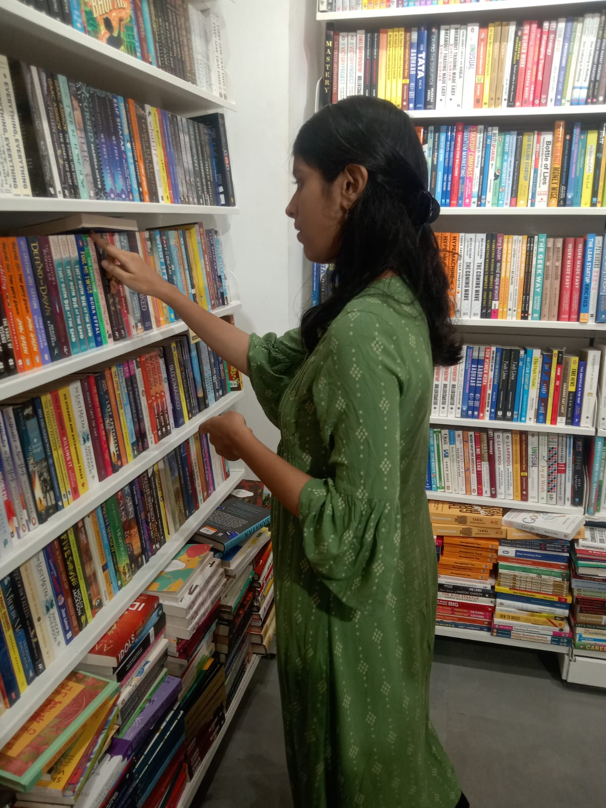
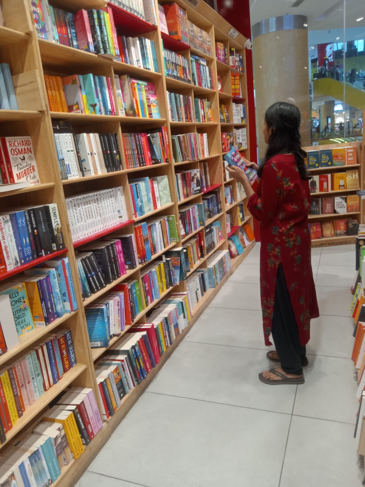

about me 📖

that's me!
Hi, I'm Sanjana 🌸 — a student, a reader, a professional overthinker, and someone who is probably thinking about food right now. I have big dreams, too many tabs open, and absolutely no idea where my charger is.
I love collecting little things — stories, songs, ideas, random interests, late-night thoughts, and moments that make ordinary days feel special. I'm still figuring things out, mostly through trial, error, and questionable decisions. ✨
This little space is basically a scrapbook of all of it — the things I love, the things I'm learning, and the occasional evidence that I actually have my life together. (Very occasional.) ♡
- 📍 Currently in — Hyderabad, surviving somehow
- 🌱 Currently learning — life... and how to wake up on time
- 📚 Usually found — reading instead of doing what I should be doing
- 🍜 Current obsession — thinking about my next meal
- 🎧 Soundtrack of my life — nightcore at questionable hours
- 🧠 Special talent — overthinking conversations from 3 years ago
- 💖 Weakness — pretty jhumkas, always
- 😴 Life philosophy — if I can sleep, I probably should
proof that i do, in fact, study 🎓
2026 — Present
MTech PDM
IIIT Hyderabad
Learning about people, products & management while trying to understand what I'm actually supposed to be doing here. So far: lots of learning, some confusion, and good snacks. 🌷
2021 — 2025
BTech CSE
Meenakshi College of Engineering
Went in to learn CSE, came out knowing full-stack, AI, GenAI, approximately 17 new things, and way too much about my friends. The degree was a nice bonus. 🎀
things i've built & places i've worked 💼
AI Research Intern
IIT Madras Research · Internship
Worked on AI research, explored ideas, experimented with models, and learned that research involves approximately 10% having an idea and 90% figuring out why it doesn't work. 🧠
Data Analytics Intern
L&T Corporate · Internship
Worked with data, analysis & real-world business problems. Learnt how to turn messy numbers into something that actually makes sense. 📊
Novel Generator
Personal Project · AI
Built a little AI-powered project for generating novels — because apparently writing an entire story wasn't enough work, so I made a machine do it too. 📖
Elder Assist
Personal Project · App
Created an app focused on making everyday tasks a little easier and more accessible for elderly users. 🌷
Animal Rescue App
Personal Project · Application
Built an application to help with animal rescue and connect animals in need with people who can help. 🐾
Travel Website
Personal Project · Web Development
Built a travel website for discovering places, planning adventures, and making me want to book a trip every time I look at it. ✈️🌍
things i do for fun 🎨
getting lost in stories
doodling absolutely anything
nightcore on repeat
making random little things
fighting with my sis
writing down my thoughts
picture gallery 🖼️
a few snapshots — swap the placeholders below for your own photos!

my safe place, my biggest headache, my favourite person ♡

proof we occasionally get along

the favourite jhumka ✨

take me to a bookstore & leave me there

bookstore sightings: part two
let's be friends 💌
Come say hi — I'd love to hear from you!